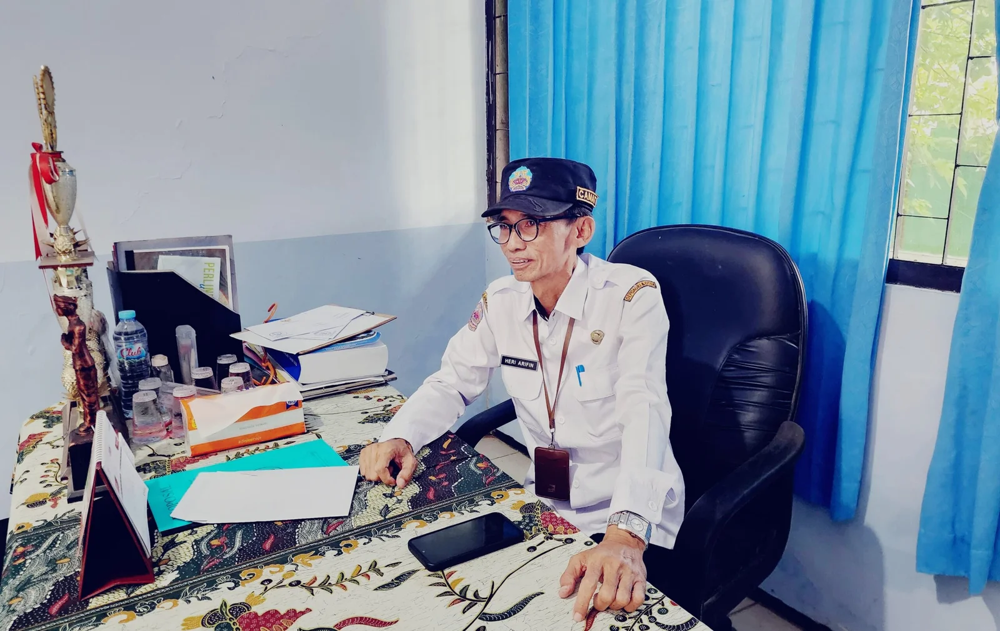

Selamat datang di portal informasi dan layanan publik terpadu Kecamatan Tanah Merah, Kabupaten Bangkalan.
Cek Layanan Kependudukan
"Puji syukur kita panjatkan kehadirat Allah SWT. Melalui peluncuran website resmi Kecamatan Tanah Merah ini, kami berkomitmen untuk mewujudkan tata kelola pemerintahan yang baik dan keterbukaan informasi publik.
Website ini dirancang untuk mempermudah masyarakat mengakses layanan administrasi, mengurus perizinan, serta mendapatkan informasi terbaru seputar program pembangunan di Tanah Merah. Mari bersama kita bangun Tanah Merah yang lebih maju!"
Camat Tanah Merah
Sedang tidak ada berita terbaru minggu ini.
Pantau terus portal kami untuk informasi selanjutnya!